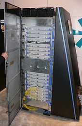

Clasificacion de la computacion ParalelaLas computadoras paralelas se pueden clasificar de acuerdo con el nivel en el que el hardware soporta paralelismo. Computación multinúcleoUn procesador multinúcleo es un procesador que incluye múltiples unidades de ejecución (núcleos) en el mismo chip. Los procesadores superescalares pueden ejecutar múltiples instrucciones por ciclo de un flujo de instrucciones (hilo), a diferencia de este, un procesador multinúcleo puede ejecutar múltiples instrucciones por ciclo de secuencias de instrucciones múltiples. Cada núcleo en un procesador multinúcleo potencialmente puede ser superescalar, es decir, en cada ciclo, cada núcleo puede ejecutar múltiples instrucciones de un flujo de instrucciones. Multiprocesamiento simétricoUn multiprocesador simétrico (SMP) es un sistema computacional con múltiples procesadores idénticos que comparten memoria y se conectan a través de un bus. La contención del bus previene el escalado de esta arquitectura. Como resultado, los SMPs generalmente no comprenden más de 32 procesadores. Computación distribuidaUn ordenador distribuido también conocido como un multiprocesador de memoria distribuida es un sistema computacional de memoria distribuida en el que los elementos de procesamiento están conectados por una red. Los ordenadores distribuidos son altamente escalables. Computación en clústerUn clúster es un grupo de ordenadores débilmente acoplados que trabajan en estrecha colaboración, de modo que en algunos aspectos pueden considerarse como un solo equipo. Los clústeres se componen de varias máquinas independientes conectadas por una red. Mientras que las máquinas de un clúster no tienen que ser simétricas, de no serlo, el balance de carga es más difícil de lograr. El tipo más común de clúster es el cluster Beowulf, que es un clúster implementado con múltiples ordenadores comerciales idénticos conectados a una red de área local TCP/IP Ethernet. Procesamiento paralelo masivoUn procesador paralelo masivo (MPP) es un solo equipo con varios procesadores conectados en red. Tienen muchas de las características de los clúster, pero cuentan con redes especializadas de interconexión en tanto que las clústeres utilizan hardware estándar para la creación de rede Los MPPs también tienden a ser más grandes que los clústeres, con mucho más de 100 procesadores. En un MPP, «cada CPU tiene su propia memoria y una copia del sistema operativo y la aplicación. Cada subsistema se comunica con los demás a través de una interconexión de alta velocidad.

Computación distribuidaLa computación distribuida es la forma más distribuida de la computación paralela. Se hace uso de ordenadores que se comunican a través de la Internet para trabajar en un problema dado. Debido al bajo ancho de banda y la latencia extremadamente alta de Internet, la computación distribuida normalmente sólo se refiere a problemas paralelos. |